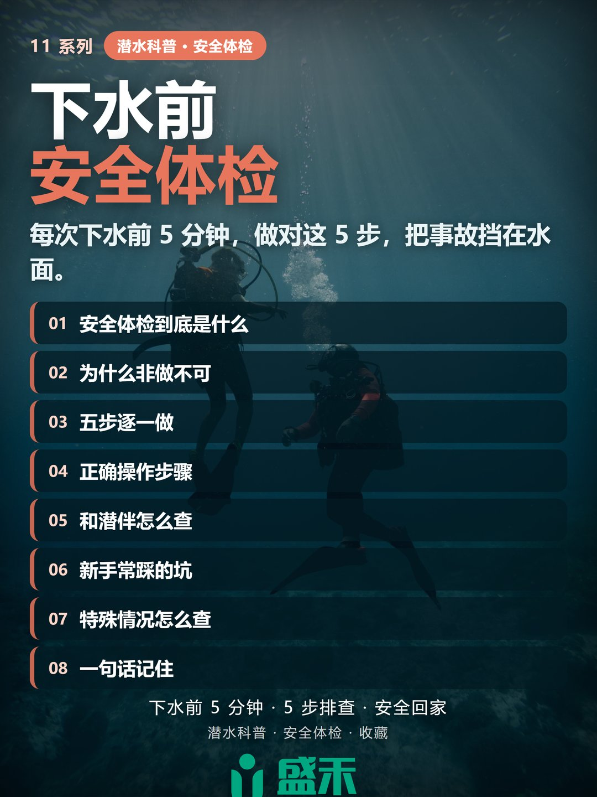
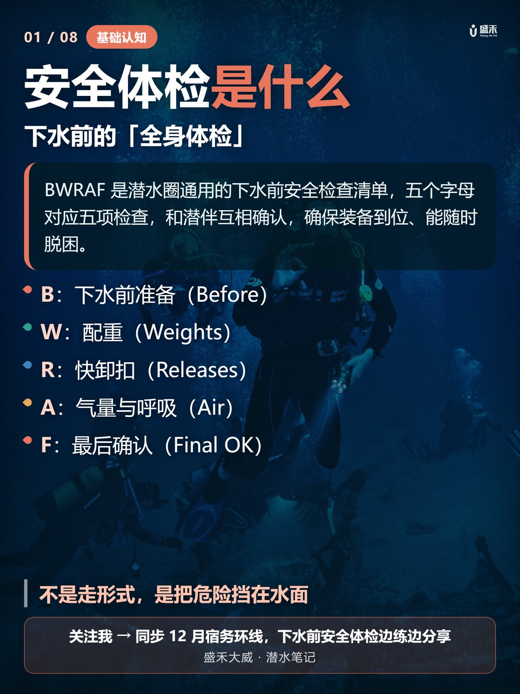
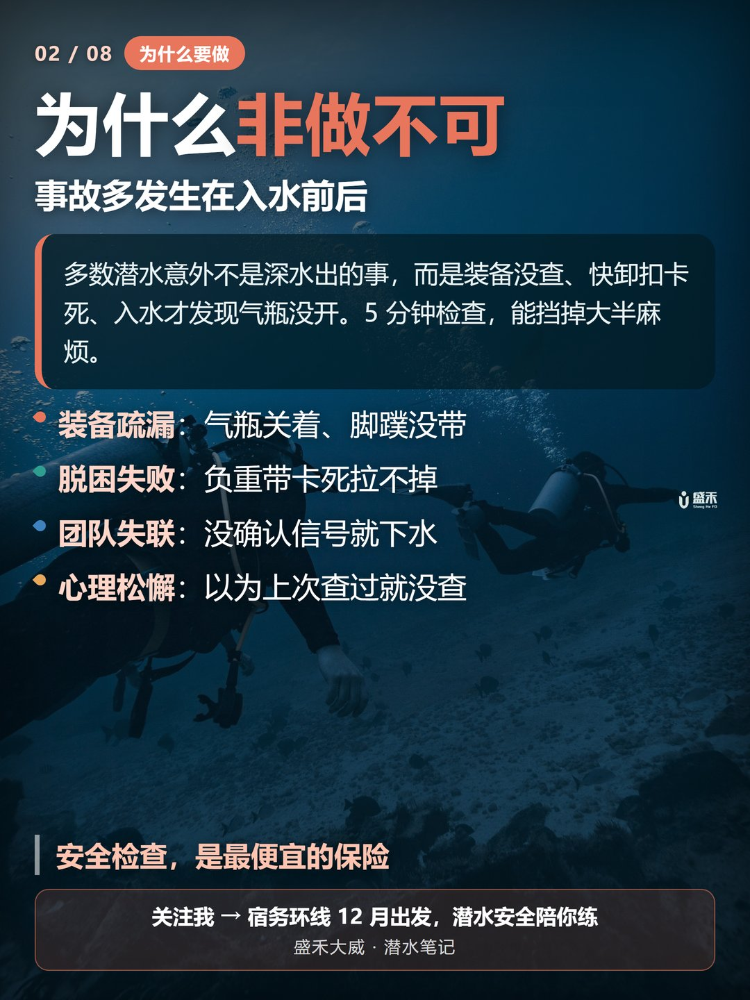
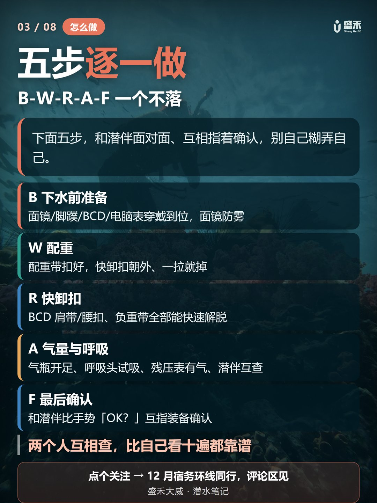
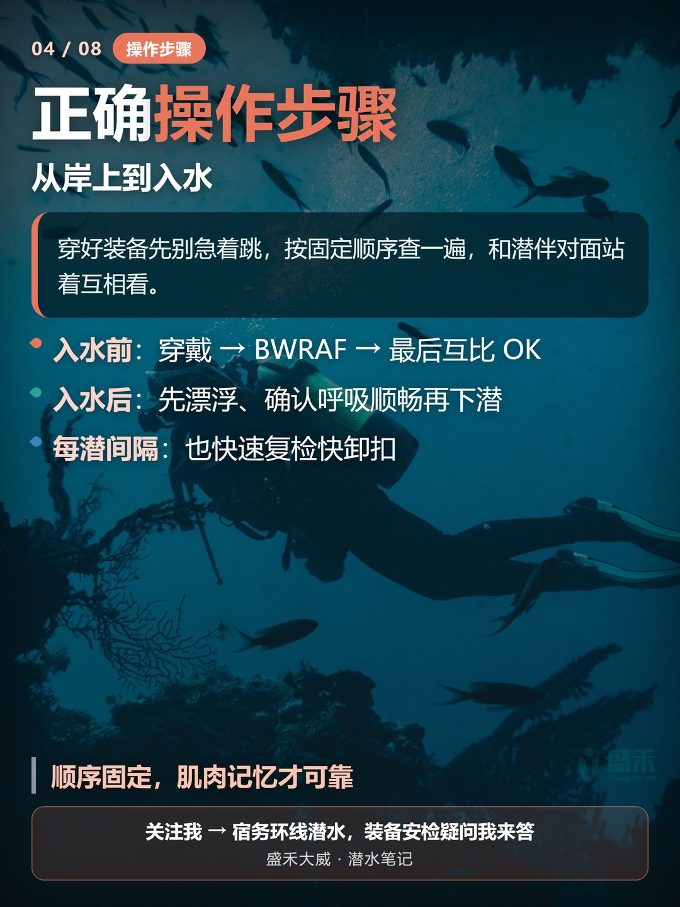
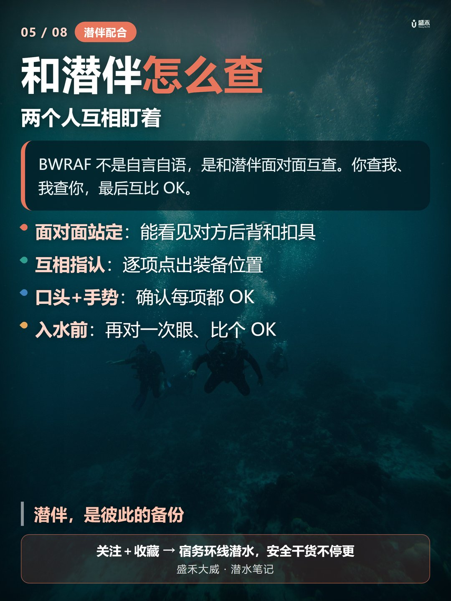
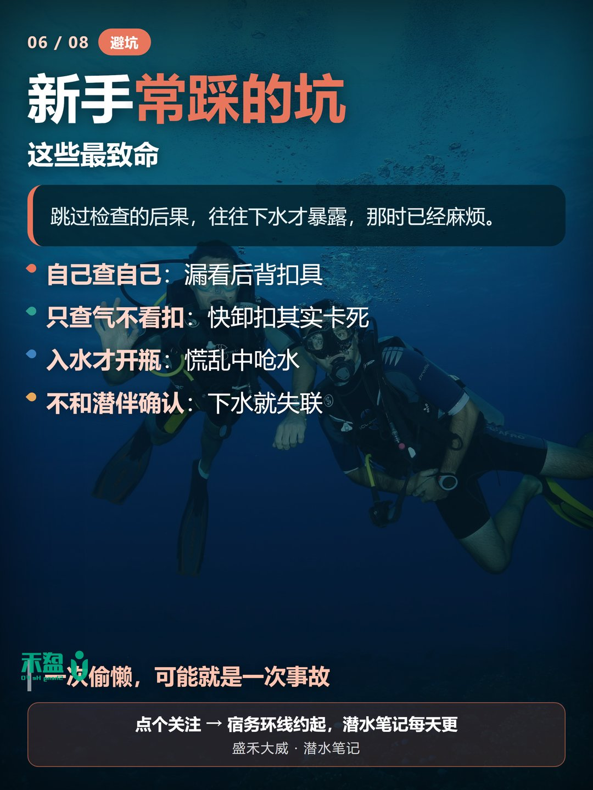
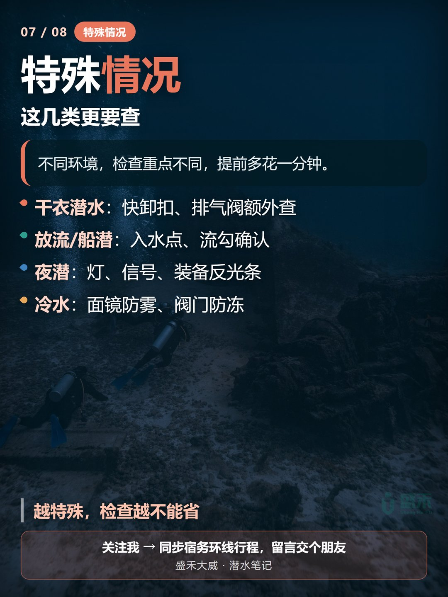
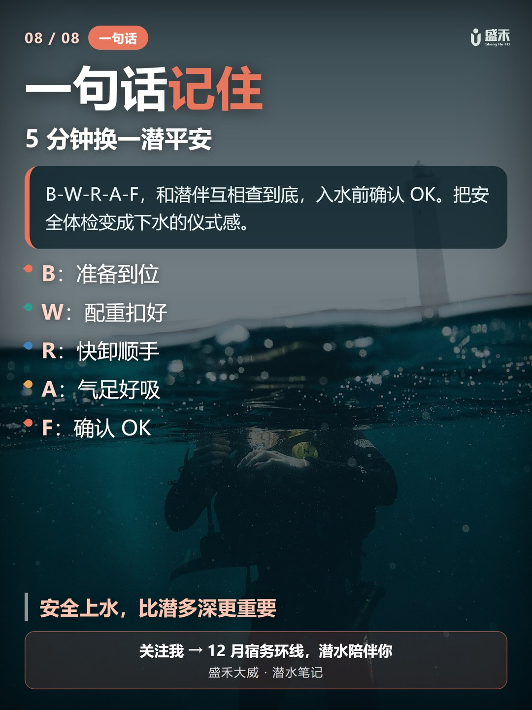

下水前那 5 分钟，比你在水下的任何技巧都重要。The five minutes before you get in the water matter more than any skill once you're down there.
BWRAF 是每个潜水员都该和潜伴一起完成的下水前安全检查——B（Before）检查穿戴、W（Weights）配重带、R（Releases）快卸扣、A（Air）气瓶与呼吸、F（Final OK）最后互比 OK。五步一个不落，看起来是形式，实际上是给你兜底的习惯。BWRAF is the pre-dive safety check every diver runs with a buddy — B (Before) gear-on, W (Weights), R (Releases), A (Air), and F (Final OK), a mutual thumbs-up. Five steps, none skipped. It looks like a formality, but it's the habit that has your back.
多数潜水事故不是发生在深水，而是装备没查、气瓶没开、快卸扣卡死这些水面小疏忽。别自己查自己，面对面让潜伴指着装备确认，才是最靠谱的。Most dive incidents don't start in deep water — they start at the surface with unchecked gear, a closed tank, or a jammed release. Never check yourself; have your buddy point at each item, face to face.
BWRAF 是潜水圈通用的下水前安全检查清单，五个字母对应五项检查，和潜伴互相确认，确保装备到位、能随时脱困。BWRAF is the universal pre-dive checklist. Five letters, five checks, confirmed with your buddy so gear is right and you can ditch it fast if you must.

多数潜水意外不是深水出的事，而是装备没查、快卸扣卡死、入水才发现气瓶没开。5 分钟检查，能挡掉大半麻烦。Most accidents aren't deep-water events — they're an unopened tank, a stuck weight belt, or a lost signal at entry. Five minutes of checking neutralizes most of it.
四类最容易出事的疏忽：装备疏漏（气瓶关着、脚蹼没带）、脱困失败（负重带卡死拉不掉）、团队失联（没确认信号就下水）、心理松懈（以为上次查过就没查）。Four slips to watch: gear slips (tank closed, fins left behind), failed escape (weight belt jams), lost comms (entering without a signal), and mental coasting (assuming last time was fine).

B-W-R-A-F 一个不落。和潜伴面对面、互相指着确认，别自己糊弄自己。B-W-R-A-F, none skipped. Face your buddy and point at each item — don't shortchange yourself.
B 下水前准备（Before）：面镜、脚蹼、BCD、电脑表穿戴到位，面镜防雾。B — Before: mask, fins, BCD, computer all on; defog the mask.
W 配重（Weights）：配重带扣好，快卸扣朝外、一拉就掉。W — Weights: belt buckled, quick-release facing out, one pull and it's gone.
R 快卸扣（Releases）：BCD 肩带、腰扣、负重带全部能快速解脱。R — Releases: BCD shoulder straps, waist buckle, and weight belt all free quickly.
A 气量与呼吸（Air）：气瓶开足、呼吸头试吸、残压表有气、潜伴互查。A — Air: tank fully open, reg breathes, pressure gauge reads, buddy cross-checks.
F 最后确认（Final OK）：和潜伴比手势「OK？」互指装备确认。F — Final OK: thumb-and-finger OK with your buddy, each pointing at the other's gear.

穿好装备先别急着跳，按固定顺序查一遍，和潜伴对面站着互相看。Don't jump in yet. Run the check in a fixed order, standing face to face with your buddy.
入水前：穿戴 → BWRAF → 最后互比 OK。Before entry: gear on → BWRAF → final mutual OK.
入水后：先漂浮、确认呼吸顺畅再下潜。After entry: float first, confirm easy breathing, then descend.
每潜间隔：也快速复检快卸扣。Between dives: a quick re-check of the releases too.

BWRAF 不是自言自语，是和潜伴面对面互查。你查我、我查你，最后互比 OK。BWRAF isn't a monologue — it's a face-to-face buddy check. You check me, I check you, then we thumb OK.
面对面站定（能看见对方后背和扣具）→ 互相指认（逐项点出装备位置）→ 口头 + 手势（确认每项都 OK）→ 入水前再对一次眼、比个 OK。Stand face to face (see each other's back and buckles) → point out each item → confirm by voice and hand signal → one last look and OK before you go under.

跳过检查的后果，往往下水才暴露，那时已经麻烦。Skip the check and the consequence shows up underwater — too late to fix easily.
① 自己查自己，漏看后背扣具；② 只查气不看扣，快卸扣其实卡死；③ 入水才开瓶，慌乱中呛水；④ 不和潜伴确认，下水就失联。1) Checking yourself, missing the back buckle. 2) Checking air but not releases — the buckle is actually jammed. 3) Opening the tank at entry, panicking into a mouthful of water. 4) No buddy confirmation, lost on entry.

不同环境，检查重点不同，提前多花一分钟。Different environments shift the focus — spend one more minute when conditions change.
干衣潜水：快卸扣、排气阀额外查。Dry suit: extra check on releases and the exhaust valve.
放流 / 船潜：入水点、流勾确认。Drift / boat dive: confirm entry point and reef hook.
夜潜：灯、信号、装备反光条。Night dive: lights, signals, and reflective gear strips.
冷水：面镜防雾、阀门防冻。Cold water: defog the mask, guard valves against freezing.

B-W-R-A-F，和潜伴互相查到底，入水前确认 OK。把安全体检变成下水的仪式感。B-W-R-A-F, checked with your buddy to the end, OK confirmed before you go under. Make the safety check a ritual of every dive.

我是盛禾大威，一名约 80 瓶的 PADI 潜水员，专长顶尖中性浮力。潜水科普持续更新——12 月我会在菲律宾宿务环线潜水，一边复习一边把这类安全细节分享出来，欢迎留言聊聊你的下水前习惯。I'm Shenghe Dawei, a PADI diver with ~80 logs, specializing in peak performance buoyancy. More dive notes coming — this December I'll be on the Cebu loop in the Philippines, sharing safety details as I review. Drop a comment about your pre-dive routine.